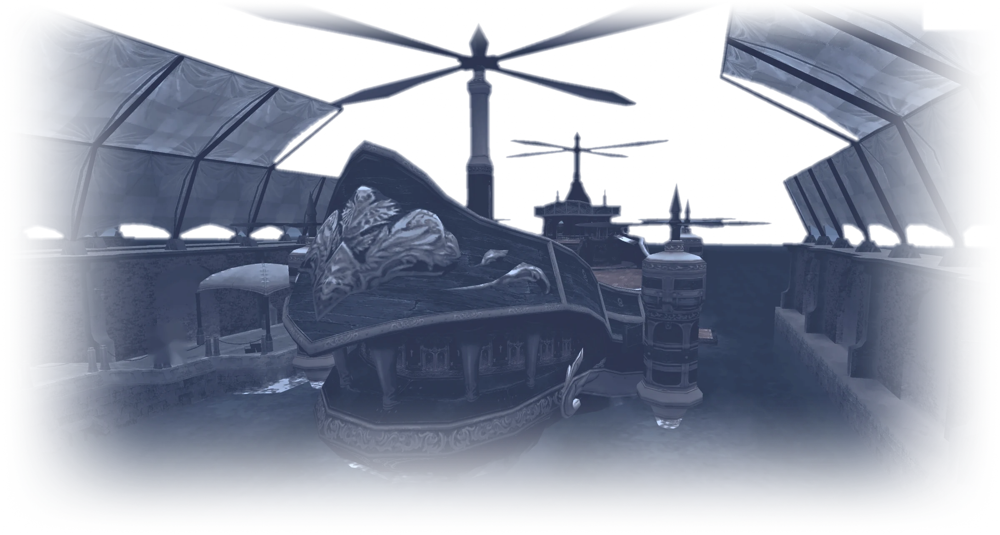

ThenTen macro palettes and a sticky note.
NowHotbars, kept per job.

Play Your Way
Sharper, smoother, and entirely yours.
Timeless XI comes with its own client: the Vana'diel you remember, drawn sharper, with modern hotbars and every tool you need one click away. The old friction is gone. The adventure isn't.
Hotbars
When an ability recasts, a tiny hourglass drains inside its icon.
Three bars of twelve, kept per job. Spells, abilities, weapon skills, macros and whole gear sets all fit on a slot, and a slot glows when your weapon skill is ready.
Everything at a glance
See exactly who the monster wants, and where its next attack will land.
Threat, cast bars and area attacks marked on the ground. A live map of the war, open rifts and roaming Champions. An atlas of every notorious monster. A Journal that knows your next step.
Less running, more adventure
All eight wardrobes, from your very first day.
Room for every job's gear, carried everywhere. Home points everywhere, with quick warps between them. The key items that once stopped you at a locked gate are yours from the start, and one linkshell connects every adventurer.
See it anew
Lufaise Meadows at dusk, behind the login. You'll know it when you see it.
High-definition faces for every race, every icon redrawn crisp at any size, and a title screen of our own. One download sets up everything, and the client keeps itself current.
Coming with the beta in December 2026
Then and now
ThenTen macro palettes and a sticky note.
NowHotbars, kept per job.
ThenOne wardrobe and a Mog Safe full of other jobs' gear.
NowAll eight wardrobes, day one.
ThenA locked gate and a missing key item.
NowWalk right through.